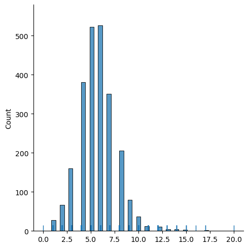
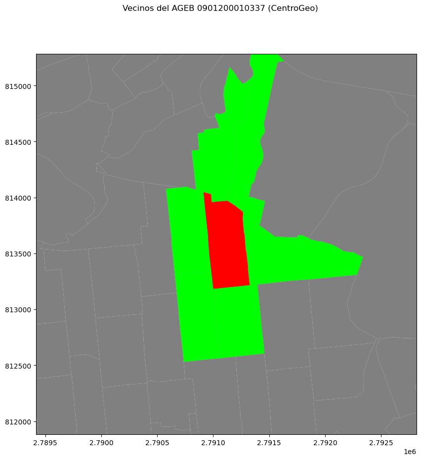
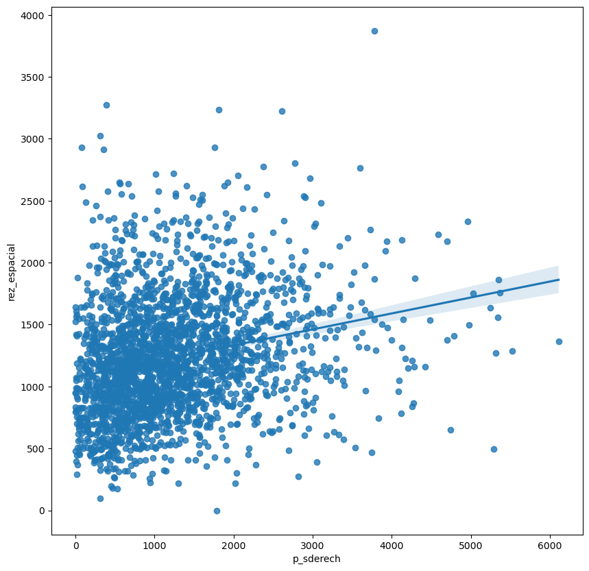
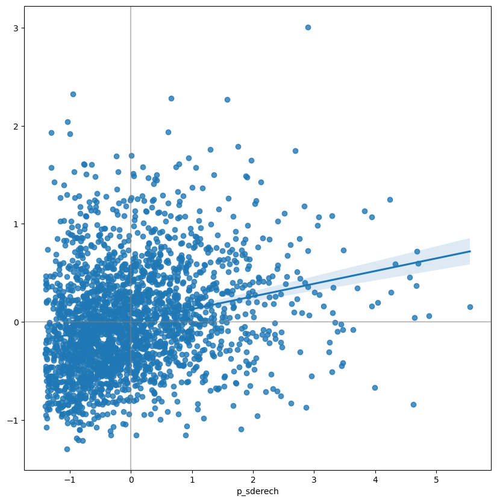

import seaborn as sns
import pandas as pd
from libpysal.weights import W,Queen, Rook, KNN, DistanceBand, min_threshold_distance, block_weights, lag_spatial
import geopandas as gpd
import numpy as np
import matplotlib.pyplot as plt8 Pesos Espaciales
En esta práctica vamos a revisar una de las piezas más importantes del análisis espacial: las Matrices de Pesos Espaciales. A través de estas matrices se formalizan las relaciones de vecindad entre todas las observaciones de un conjunto de datos; en otras palabras, una Matriz de Pesos Espaciales de una geografía dada es una matriz definida positiva de dimensiones \(N\) por \(N\), donde \(N\) es el número total de observaciones en los datos:
\[ W = \left(\begin{array}{cccc} 0 & w_{12} & \dots & w_{1N} \\ w_{21} & \ddots & w_{ij} & \vdots \\ \vdots & w_{ji} & 0 & \vdots \\ w_{N1} & \dots & \dots & 0 \end{array} \right) \]
donde cada celda \(w_{ij}\) contiene un valor que representa el grado de contacto o interacción espacial entre las observaciones \(i\) y \(j\).
Dos conceptos fundamentales dentro de este ámbito son el de vecino y vecindad. Por convención, todos los elementos de la diagonal principal (\(w_{ij}\)) se les asigna cero; el vecino de cualquier observación \(i\) es otra observación con la cual \(i\) tiene cierta conectividad. En términos de la matriz \(W\), las observaciones \(i\) y \(j\) serán vecinos si se cumple que \(w_{ij} > 0\). Siguiendo esta lógica, la vecindad de \(i\) será el conjunto de observaciones en el sistema con las cuales posee cierta conexión, o, en otras palabras, todas las observaciones con las que comparte un valor de peso mayor que cero.
Hay múltiples formas en las que pueden crearse estas matrices, y muchas otras en las que pueden ser transformadas para que la información representada se alinie lo más posible con la forma en la que entendemos las interacciones espaciales entre los elementos de un sistema. En esta sesión, trabajaremos con la librería PySAL que es el estándar para análisis espacial en Python.
Como siempre, comenzamos por importar las librerías que vamos a usar.
8.1 Datos
Vamos a seguir utilizando las AGEB’s de la Ciudad de México, esta vez con dos columnas importantes: alcaldia, que contiene la Clave Geográfica de la Alcaldía dentro de la cual se encuentra dicho AGEB, y p_sderech, que indica el número de personas sin derechohabienca a servicios de salud, de acuerdo con información colectada por el Consejo Nacional de Evaluación de Política del Desarrollo Social (CONEVAL) en 2010.
Como siempre, los datos necesarios se encuentran en la carpeta de datos del libro, por practicidad, aquí está la liga para descargar los datos.
Una vez descargados los datos, usamos GeoPandas para leerlos:
agebs = gpd.read_file('datos/pob_sinderechohab.zip')
agebs.head()| cvegeo | alcaldia | p_sderech | p_nescu | p_hacin | p_analf | geometry | |
|---|---|---|---|---|---|---|---|
| 0 | 0900700013628 | 09007 | 389.0 | 475.0 | 0.0 | 9.0 | POLYGON ((2810132.372 824698.172, 2810169.540 ... |
| 1 | 0901500010235 | 09015 | 323.0 | 481.0 | 6.0 | 7.0 | POLYGON ((2798881.634 831643.241, 2798843.076 ... |
| 2 | 0900200010097 | 09002 | 448.0 | 780.0 | 5.0 | 37.0 | POLYGON ((2792415.239 836846.390, 2792356.808 ... |
| 3 | 0900200011184 | 09002 | 240.0 | 389.0 | 0.0 | 11.0 | POLYGON ((2792260.139 836768.777, 2792333.695 ... |
| 4 | 0900300011285 | 09003 | 1017.0 | 1291.0 | 0.0 | 23.0 | POLYGON ((2802121.600 817466.682, 2802124.157 ... |
8.2 Pesos Espaciales en PySAL
8.2.1 Contigüidad
Las Matrices de Contigüidad definen las relaciones de vecindad a través de la existencia de fronteras comúnes. Esto facilita enormemente el utilizar este tipo de matrices con polígonos: si dos polígonos comparten frontera de alguna forma, serán entoces etiquetadas como vecinos; el nivel en el cual tienen que compartir esta frontera será dado por el criterio que se elija para ello, teniéndose los criterios de Reina o de Torre.
8.2.1.1 Criterio de Reina
Bajo éste, basta con que dos polígonos compartan únicamente un sólo vértice de sus fronteras para ser considerados vecinos, en PySAL podemos crear una matriz de contigüidad con el criterio de reina haciendo:
m_reina = Queen.from_dataframe(agebs, idVariable='cvegeo')
m_reina/home/plablo/.miniconda3/envs/geoinformatica/lib/python3.10/site-packages/libpysal/weights/weights.py:172: UserWarning: The weights matrix is not fully connected:
There are 8 disconnected components.
There is 1 island with id: 090090015012A.
warnings.warn(message)<libpysal.weights.contiguity.Queen at 0x7f9f027e5ed0>Estamos guardando en la variable m_reina un objeto del tipo libpysal.weights.contiguity.Queen que representa la matriz de vecindad que calculamos. Noten el warning que nos sale: “There is 1 island with id: 1356”, eso quiere decir que la observación con índice 1356 no está conectada a ninguna otra bajo el criterio que usamos.
Las Matrices Espaciales en PySAL ofrecen la facilidad de encontrar rápidamente las relaciones de contigüidad que posee. Por ejemplo, si se quisiera saber cuáles son los vecinos de la AGEB en la que se encuentra el CentroGeo (0901200010337), se tendría que:
m_reina['0901200010337']{'0901200012066': 1.0,
'0901200010642': 1.0,
'0901200011369': 1.0,
'0901200010341': 1.0,
'0901200010322': 1.0,
'0901200010638': 1.0}El comando anterior arroja un diccionario que contiene las Claves Geográficas de cada vecino como identificadores, y los pesos a los que se asocia como sus respectivos valores; debido a que se trata de una Matriz Espacial de contigüidad, todos los vecinos tienen asignados un peso de uno. Si se quisiera tener el peso de un vecino en particular, se puede realizar una búsqueda recursiva:
m_reina['0901200010337']['0901200010341']1.0También pueden obtenerse de forma aislada una lista de los vecinos de cada observación, así como de sus respectivos pesos, gracias a los atributos neighbors y weights del objeto creado:
m_reina.neighbors['0901200010337']['0901200012066',
'0901200010642',
'0901200011369',
'0901200010341',
'0901200010322',
'0901200010638']m_reina.weights['0901200010337'][1.0, 1.0, 1.0, 1.0, 1.0, 1.0]A través del objeto contenido en la variable m_reina es posible obtener información de la matriz que va mucho más allá de los atributos básicos que uno esperaría. Por ejemplo, es posible acceder de forma directa al número de vecinos que posee una observacioń a través del atributo cardinalities:
m_reina.cardinalities['0901200010337']6Y, debido a que el resultado de cardinalities es un diccionario, éste puede ser transformado directamente en un objeto del tipo Series:
card_reina = pd.Series(m_reina.cardinalities)
card_reina.head()0900200010010 3
0900200010025 4
090020001003A 4
0900200010044 4
0900200010097 4
dtype: int64Esto, a su vez, permite realizar cosas como graficas que, en este caso, nos permite tener una visión general del tamaño de las vecindades en general:
sns.displot(card_reina, rug = True, kde = False)<seaborn.axisgrid.FacetGrid at 0x7f9e91ae4d90>
La gráfica anterior permite deducir que la mayoría de las observaciones poseen alrededor de cinco y sesis vecinos, existiendo algo de variación entre los datos; así mismo, aunque son las menos, también existen observaciones con un gran número de vecinos, llegándose hasta los 20 vecinos.
A continuación se presenta algo de la información adicional que puede obtenerse de la Matriz de Pesos Espaciales, a través de sus atributos particulares:
# Número de Observaciones
m_reina.n2397# Número Promedio de Vecinos
m_reina.mean_neighbors5.677096370463079# Número Mínimo de Vecinos
m_reina.min_neighbors0# Número Máximo de Vecinos
m_reina.max_neighbors20# Islas (Observaciones Desconectadas del Resto / Sin Vecinos)
m_reina.islands['090090015012A']# Orden en que se encuentran las Observaciones (en este caso, las primeras cinco)
m_reina.id_order[:5]['0900200010010',
'0900200010025',
'090020001003A',
'0900200010044',
'0900200010097']También podemos hacer visualizaciones para observar algunas características de las matrices de contigüidad. Por ejemplo, podemos ver los vecinos de una unidad en particular. En el siguiente código podemos ver las agebs vecinas de la ageb en la que se encuentra el CentroGeo
# Preparar la figura
fig , filas = plt.subplots(1, figsize = (10, 10))
# Graficar la Capa Base
agebs.plot(ax = filas , facecolor = 'grey', linewidth = 0.1)
# Seleccionar el Polígono Focal (Tanto la Clave Geográfica como la Geometría tienen sus propios corchetes)
centrogeo = agebs.set_index('cvegeo').loc[['0901200010337'] , ['geometry']]
# Graficar el Polígono Focal
centrogeo.plot(ax = filas , facecolor = 'red', alpha = 1, linewidth = 0)
# Graficar los Vecinos
vecinos = agebs.set_index('cvegeo').loc[m_reina['0901200010337'], :]
vecinos.plot(ax = filas , facecolor = 'lime')
# Título
fig.suptitle('Vecinos del AGEB 0901200010337 (CentroGeo)')
# Acercamiento a los Polígonos
filas.set_ylim(811882.7509 , 815282.7509)
filas.set_xlim(2789417.0236 , 2792817.0236)/tmp/ipykernel_7969/3035649815.py:14: FutureWarning: Passing a dict as an indexer is deprecated and will raise in a future version. Use a list instead.
vecinos = agebs.set_index('cvegeo').loc[m_reina['0901200010337'], :](2789417.0236, 2792817.0236)
Es importante remarcar el proceso a través del cual fue construída la gráfica; primero, se agregó el mapa base, después el polígono de interés, para seguir con la vecindad y, finalmente, realizar el acercamiento deseado.
8.2.1.2 Criterio de Torre
La Contigüidad de Torre es similar, en este caso dos observaciones se consideran contiguas si comparten una arista (es decir, una línea). Desde el punto de vista técnico, una Matriz de Pesos Espaciales con Contigüidad de Torre se construye de forma muy similar al de Reina:
m_torre = Rook.from_dataframe(agebs, idVariable = 'cvegeo')
m_torre/home/plablo/.miniconda3/envs/geoinformatica/lib/python3.10/site-packages/libpysal/weights/weights.py:172: UserWarning: The weights matrix is not fully connected:
There are 11 disconnected components.
There is 1 island with id: 090090015012A.
warnings.warn(message)<libpysal.weights.contiguity.Rook at 0x7f9e90b50100>El objeto contenido en la variable m_torre pude ser utilizado y explorado exactamente de la misma manera que m_reina.
8.2.1.3 Ejercicio, haz un mapa de la vecindad de reina para el ageb de CentroGeo
8.2.2 Distancia
Las matrices basadas en distancia asignan el peso de cada par de observaciones como una función de qué tan lejos se encuentran entre sí; cómo se traduce esta regla en un valor fijo varía en función de múltiples criterios, pero todos giran alrededor del hecho de que la distancia entre las observaciones determinará el Peso Espacial.
8.2.2.1 K-Vecinos Más Cercanos (KNN)
Una forma de definir los Pesos Espaciales es tomar las distancias entre una observación determinada y el resto de los datos, ordenarlos en función de su distancia y considerar como vecinos a los \(k\) más cercanos; esto es exactamente lo que hace el criterio de \(k\)-Vecinos Más Cercanos (KNN, por sus siglas en inglés).
Para calcular una Matriz de Pesos Espaciales a través del criterio KNN, se utiliza una función muy similar a la usada con los Criterios de Contigüidad:
knn5 = KNN.from_dataframe(agebs, ids='cvegeo', k = 5)
knn5<libpysal.weights.distance.KNN at 0x7f9e90b7e920>Puede observarse que es necesario indicar el número de vecinos que se deberán de considerar, a través del argumento k. Asímismo, ésta función cuenta con una forma diferente de asignar los ID’s a cada observación, haciéndolo a través del argumento ids; en lugar de indicar el nombre de la variable que funcionará como identificador.
La función automáticamente calcula los centroides de cada observación para calcular la distancia entre las mismas.
8.2.2.2 Ejercicio
Visualiza los vecinos más cercanos a la ageb de CentroGeo para valores de k de 4,5,6 y 7 y pon todos los mapas en la misma figura
8.2.2.3 Banda de Distancia
Otra forma de obtener una Matriz de Pesos Espaciales basada en Distancias es trazar un círculo de radio determinado y considerar como vecino a toda observación que se encuentre dentro de éste. Esta técnica posee dos variaciones: Binaria y Contínua; en la primera, todos los vecinos son asignados un peso de uno, mientras que en la segunda las observaciones son ajustadas en función a la distancia a la observación de interés.
Para generar matrices con Bandas de Distancias Binarias en PySAL, se utiliza el siguiente comando:
m_dist1kmB = DistanceBand.from_dataframe(agebs , threshold=1000 , binary=True , ids='cvegeo')
m_dist1kmB/home/plablo/.miniconda3/envs/geoinformatica/lib/python3.10/site-packages/libpysal/weights/weights.py:172: UserWarning: The weights matrix is not fully connected:
There are 34 disconnected components.
There are 14 islands with ids: 0901200011759, 0900200010877, 0900300010770, 0900400010369, 0900400010373, 0900400200316, 090090015012A, 0900900330488, 0900900360242, 0901200011195, 0901200012155, 0901200262297, 0901300011474, 0901300011578.
warnings.warn(message)<libpysal.weights.distance.DistanceBand at 0x7f9e90b50340>Noten que el parámetro threshold, que definoe el ancho de la banda de distancia, está en las unidades de la proyección de la capa.
Esto crea una matriz binaria que considera como vecinos de una observación a todo polígono cuyo centroide se encuentre dentro de un radio de 1,000 metros (1km) del centroide de la observación, límite expresado a través del argumento threshold; además, se especifica que la matriz sea binaria a través del argumento binary. Como tal, si se observan los vecinos del AGEB de CentroGeo:
m_dist1kmB['0901200010337']{'0901200010657': 1.0,
'0901200010638': 1.0,
'0901200010318': 1.0,
'0901200010322': 1.0,
'0901200010341': 1.0,
'0901200010642': 1.0,
'0901200011369': 1.0,
'0901200011388': 1.0}Es importante destacar que las unidades en las que se especifica la distancia del círculo dependen del Sistema de Coordenadas de Referencia (CRS) en el que se encuentren proyectados los datos, por lo que es importante tomarlo en cuenta al momento de ingresar el valor. El CRS de un GeoDataFrame puede ser revisado a través de su atributo crs:
En este caso, se tiene el sistema con el EPSG 6362, equivalente a la Proyección Cónica Conforme de Lambert (LCC) para México, la cual utiliza como unidades al metro, teniendo entonces sentido el haber colocado dentro del argumento treshold el valor de 1,000 para representar 1km.
Una extensión de lo anterior implica el añadir mayor detalle al asignar diferentes pesos a los diferentes vecinos dentro del círculo de radio determinado en función de su distancia a la observación de interés; una forma de hacer esto es utilizando el inverso de la distancia entre dos observaciones como su peso. Esto se realiza a través de la variante Contínua del método, la cual se consigue modificando el argumento binary del comando utilizado anteriormente:
m_dist1kmC = DistanceBand.from_dataframe(agebs , threshold=1000 , binary=False, ids='cvegeo')
m_dist1kmC/home/plablo/.miniconda3/envs/geoinformatica/lib/python3.10/site-packages/scipy/sparse/_data.py:117: RuntimeWarning: divide by zero encountered in reciprocal
return self._with_data(data ** n)<libpysal.weights.distance.DistanceBand at 0x7f9e9133e380>Con m_dist1kmC, a toda observación dentro del círculo de 1km se le asigna un peso igual al inverso de la distancia entre cada par de observaciones:
\[ w_{ij} = \dfrac{1}{d_{ij}} \]
De esta forma, mientras más alejadas se encuentren \(i\) y \(j\) entre sí, menor será el peso \(w_{ij}\). Esto puede verificarse observando nuevamente los valores para los vecinos del AGEB de CentroGeo:
m_dist1kmC['0901200010337']{'0901200010657': 0.0011186366205468501,
'0901200010638': 0.001430708698453151,
'0901200010318': 0.0015967606198248982,
'0901200010322': 0.002801456949838892,
'0901200010341': 0.0016416791117487674,
'0901200010642': 0.0014321050161851287,
'0901200011369': 0.0011074818342581747,
'0901200011388': 0.0010068495493531873}Siguiendo esta lógica de ajustar los pesos a través de las distancias, existe la posibilidad de hacer que todos los elementos de un conjunto de datos se conviertan en vecinos entre sí, ya que siempre existirá alguna distancia entre todos los pares posibles; sin embargo, aunque conceptualmente correcto, esta decisión no siempre es la más práctica o computacionalmente correcta pues, debido a la naturaleza de las Matrices de Pesos Espaciales, particularmente el hecho de que tienen dimensiones de \(N\) por \(N\), éstas pueden crecer substancialmente en tamaño.
Una forma de resolver el problema anterior es asegurándose de que la matriz posea múltiples ceros en su interior. En el caso de las matrices de contigüidad, así como las del criterio KNN, la presencia de estos ceros se encuentra asegurada; sin embargo, en el caso del Inverso de la Distancia, necesita imponerse la presencia de éstos pues, de lo contrario, puede convertise en una matriz muy densa (Esto es, con pocos o ningún cero más que los de la diagonal principal).
En términos prácticos, lo que usualmente se hace es imponer una distancia límite de la cual más allá no se asignará ningún peso, y se asume que no hay interacción alguna. Además de hacer el proceso más sencillo computacionalmente, los resultados obtenidos con esta distancia no difieren mucho de los que se tendría con una matriz completamente densa, debido a que la información eliminada con la distancia normalmente corresponde a pesos espaciales muy pequeños.
En este contexto, un umbral comúnmente utilizado, aunque no siempre el mejor, es aquel en el que se asegura que todas las observaciones tengan por lo menos un vecino. Esta distancia puede calcularse fácilmente usando la función min_threshold_distance. La entrada de esta función no es el GeoDataFrame sino la lista de coordenadas de los centroides, afortunadamente es muy fácil pasar del GeoDataFrame a la lista de coordenadas
coordenadas = np.array([(pt.x , pt.y) for pt in agebs.centroid])
coordenadasarray([[2810184.3953237 , 824630.90277965],
[2798795.09167579, 831549.7671602 ],
[2792280.44399879, 837098.86138355],
...,
[2807793.98111279, 828749.42701419],
[2807892.48374243, 828610.97973225],
[2807674.47595458, 828330.05069586]])Y ahora sí podemos calcular nuestro umbral de distancia
dist_min = min_threshold_distance(coordenadas)
dist_min1958.9642337770003Teniendo esto, puede volverse a calcular la Matriz de Pesos con Banda de Distancia Contínua utilizando ésta nueva distancia calculada como umbral:
m_distmin = DistanceBand.from_dataframe(agebs, threshold = dist_min , binary = False, ids = 'cvegeo')
m_distmin/home/plablo/.miniconda3/envs/geoinformatica/lib/python3.10/site-packages/scipy/sparse/_data.py:117: RuntimeWarning: divide by zero encountered in reciprocal
return self._with_data(data ** n)
/home/plablo/.miniconda3/envs/geoinformatica/lib/python3.10/site-packages/libpysal/weights/weights.py:172: UserWarning: The weights matrix is not fully connected:
There are 2 disconnected components.
warnings.warn(message)<libpysal.weights.distance.DistanceBand at 0x7f9e913e6aa0>Si se revisan los vecinos de la AGEB del CentroGeo en esta matriz, se notará que se señalan como tal todas las AGEB’s contenidas dentro de la Alcaldía Tlalpan, donde se encuentra el Centro:
8.2.2.4 Ejercicio Opcional
Utilizando la Matriz de Pesos por Bloques, intenta crear un mapa similar al generado anteriormente con la Matriz de Contigüidad de Reina. ___ ## Estandarización de Matrices
En el contexto de muchas técnicas de análisis espacial, una Matriz de contigüidad, que nos indica sólo si dos unidades son o no vecinos,no es siempre la más adecuada para un análisis, por lo que algún tipo de transformación es requerida, lo cual implica modificar cada peso para que se conforme a ciertas reglas. PySAL posee múltiples transformaciones preparadas para las matrices que genera, así que resulta sencillo modificarla y examinarla.
Tomando en cuenta la Matriz de Contigüidad de Reina generada anteriormente, para la AGEB del CentroGeo:
m_reina['0901200010337']{'0901200012066': 1.0,
'0901200010642': 1.0,
'0901200011369': 1.0,
'0901200010341': 1.0,
'0901200010322': 1.0,
'0901200010638': 1.0}Debido a que se trata de un criterio de contigüidad, todos los vecinos del AGEB poseen un peso de 1, mientras que el resto poseen un cero. Es posible verificar si el objeto m_reina ha sido transformado o no al llamar al atributo transform:
m_reina.transform'O'Donde 'O' significa ‘Original’, esto es, ninguna transformación ha sido aplicada. Si se buscara aplicar una transformación sobre las filas de la matriz, de modo que todas las filas de ésta sumen en total 1, el atributo transform es modificado de la siguiente forma:
m_reina.transform = 'R'('WARNING: ', '090090015012A', ' is an island (no neighbors)')De modo que, si se revisa nuevamente la vecindad del AGEB de CentroGeo, se encontrarán los pesos modificados:
m_reina['0901200010337']{'0901200012066': 0.16666666666666666,
'0901200010642': 0.16666666666666666,
'0901200011369': 0.16666666666666666,
'0901200010341': 0.16666666666666666,
'0901200010322': 0.16666666666666666,
'0901200010638': 0.16666666666666666}Sin considerar algunas limitaciones de precisión del lenguaje, puede constatarse que la suma de los pesos de todos los vecinos es igual a uno:
pd.Series(m_reina['0901200010337']).sum()0.9999999999999999La matriz puede ser regresada fácilmente a su estado original, simplemente modificando el atributo transform de la forma correcta:
m_reina.transform = 'O'
m_reina['0901200010337']{'0901200012066': 1.0,
'0901200010642': 1.0,
'0901200011369': 1.0,
'0901200010341': 1.0,
'0901200010322': 1.0,
'0901200010638': 1.0}PySAL permite realizar sobre las matrices las siguientes transformaciones: * 'O' - Original, permite regresar a la matriz a su estado inicial. * 'B' - Binario, asignándole a todos los vecinos un peso de uno. * 'R' - Fila (Row), haciendo que el peso de todos los vecinos de una observación dada sumen uno. * 'V' - Estabilizados de Varianza, restringiéndose la suma de todos los pesos de la matriz al número de observaciones. ___ ## Exportar e Importar Pesos Espaciales con PySAL Existen casos en los que un Conjunto de Datos es muy detallado o de gran tamaño, lo cual puede complicar la construcción de las Matrices de Pesos Espaciales y, aún con las optimizaciones del código de PySAL, el tiempo de cómputo puede crecer enormemente; en estas situaciones, es útil el no tener que reconstruir la matriz desde cero cada vez que se necesite volver a correr un análisis. Una sólución para este problema es el construir la matriz una única ocasión, para después exportarla y tenerla almacenada en un sitio donde pueda ser consultada cuando se necesite.
La forma en la que PySAL realiza la exportación de cualqueir tipo de matriz es a través del comando open, siendo necesario únicamente determinar el formato en que se exportará ésta. Aunque existen múltiples formatos en los cuales las matrices pueden ser almacenadas, existen dos comúnmente utilizadas:
8.2.2.5 Formato .gal - Matrices de Contigüidad
Las Matrices de Contigüidad pueden ser almacenadas en un archivo tipo .gala través de los siguientes comandos:
m_reina.to_file("datos/m_reina.gal", 'gal')Este objeto lo podemos leer fácilmente
m_reina2 = W.from_file("datos/m_reina.gal", 'gal')
m_reina2/home/plablo/.miniconda3/envs/geoinformatica/lib/python3.10/site-packages/libpysal/weights/weights.py:172: UserWarning: The weights matrix is not fully connected:
There are 8 disconnected components.
There is 1 island with id: 090090015012A.
warnings.warn(message)<libpysal.weights.weights.W at 0x7f9e9138a1d0>8.3 Rezago Espacial
Una de las aplicaciones más directas de las Matrices de Pesos Espaciales es el cálculo del Rezago Espacial; éste se define como el producto de una Matriz de Pesos Espaciales con una variable en particular:
\[ Y_{sl} = W Y \]
Donde \(Y\) es un vector de dimensiones \(Nx1\) con los valores de la variable. Cabe recordar que el producto entre una matriz y un vector es igual a la suma de todas las multiplicaciones entre la columna de la variable y las filas de la matriz, para los valores resultantes de una columna dada; lo anterior, dicho en términos de Rezago Espacial, se representa como:
\[ y_{sl-i} = \displaystyle \sum_j w_{ij} y_j \]
Si se utilizan pesos estandarizados por fila en la Matriz de Pesos Espaciales, entonces \(w_{ij}\) se convierte en una proporción entre cero y uno, y \(y_{sl-i}\) puede ser visto como el valor promedio de \(Y\) para la vecindad de \(i\).
El Rezago Espacial es un elemento fundamental para muchas técnicas de análisis espacial y, como tal, PySAL provee la funciónlag_spatial para calcularlo de forma sencilla. En los datos originales existe una variable llamada p_sderech, referente al número de personas sin derechoahabienca a servicios públicos de salud dentro de la Ciudad de México, de acuerdo con información colectada por el Consejo Nacional de Evaluación de Política del Desarrollo Social (CONEVAL) en 2010; si se quisiera calcular el rezago espacial para esa variable, entonces se tendría:
# Estandarización de la Matriz de Contigüidad de Reina por Filas
m_reina.transform = 'R'
# Cálculo del rezago espacial para el Número de Personas sin Derechohabiencia a Servicios Públicos de Salud
rez_espacial = lag_spatial(m_reina , agebs['p_sderech'])
# Mostrar los primeros cinco elementos del vector generado
rez_espacial[:5]array([337. , 419.5, 484.5, 409. , 500. ])De los comandos anteriores, la línea 5 contiene el comando donde se genera el cálculo deseado, el cual se encuentra altamente optimizado en PySAL. Aunque dentro de la función se utilizó un objeto del tipo Series, a través de agebs['p_sderech'], el resultado es una lista y, como tal, puede ser añadida directamente al GeoDataFrame con el que se ha trabajado hasta ahora:
agebs['rez_espacial'] = rez_espacial
agebs.head()| cvegeo | alcaldia | p_sderech | p_nescu | p_hacin | p_analf | geometry | rez_espacial | |
|---|---|---|---|---|---|---|---|---|
| 0 | 0900700013628 | 09007 | 389.0 | 475.0 | 0.0 | 9.0 | POLYGON ((2810132.372 824698.172, 2810169.540 ... | 337.0 |
| 1 | 0901500010235 | 09015 | 323.0 | 481.0 | 6.0 | 7.0 | POLYGON ((2798881.634 831643.241, 2798843.076 ... | 419.5 |
| 2 | 0900200010097 | 09002 | 448.0 | 780.0 | 5.0 | 37.0 | POLYGON ((2792415.239 836846.390, 2792356.808 ... | 484.5 |
| 3 | 0900200011184 | 09002 | 240.0 | 389.0 | 0.0 | 11.0 | POLYGON ((2792260.139 836768.777, 2792333.695 ... | 409.0 |
| 4 | 0900300011285 | 09003 | 1017.0 | 1291.0 | 0.0 | 23.0 | POLYGON ((2802121.600 817466.682, 2802124.157 ... | 500.0 |
8.3.0.1 Ejercicio Opcional
Analiza el Rezago Espacial calculado y almacenado en la variable rez_espacial generando una Gráfica de Densidad de Kernel o un Histograma de forma similar a como se hizo en prácticas anteriores; compara esta gráfica con una similar para la variable p_sderech y responde: ¿Qué diferencias se pueden observar? ___ ## Gráfica de Moran La Gráfica de Moran es una forma de visualización que permite empezar a explorar el concepto de Autocorrelación Espacial, y demuestra una aplicación directa de las Matrices de Pesos Espaciales y el Rezago Espacial. En escencia, se trata de un simple Diagrama de Dispersión en el que una determinada variable (p_sderech, por ejemplo) es graficada junto con su propio rezago espacial; usualmente se adiciona una regresión lineal para poder inferir una mayor cantidad de información:
# Preparación de la Figura y sus Filas
fig , filas = plt.subplots(1 , figsize = (10,10))
# Variables de la Gráfica
sns.regplot(x = 'p_sderech', y = 'rez_espacial', data = agebs)
# Mostar Gráfica
plt.show()
Para tener la capacidad de comparar entre múltiples diagramas de dispersión y poder encontrar observaciones atípicas, es común estandarizar los valores de una variable antes de calcular su rezago espacial y graficarlo. Esto se consigue de forma sencilla al restar el promedio de la variable y dividir el resultado entre su desviación estándar:
\[ z_i = \dfrac{y - \bar{y}}{\sigma_y} \]
Donde \(z_i\) es la versión estandarizada de \(y_i\), \(\bar{y}\) es el promedio de la variable y \(\sigma\) su desviación estándar.
Crear una Gráfica de Moran Estandarizada implica que los valores promedio se encuentren en el centro de la gráfica (debido a que se convierten en cero al estandarizar), y su dispersión se encuentra expresada en desviaciones estándar, teniéndose a todos los valores que sean más grandes o más pequeños que dos desviaciones estándar como valores atípicos. Una Gráfica de Moran Estandarizada también permite dividir al espacio en cuatro cuadrantes que representan situaciones diferentes:
- Cuadrante I - Altos-Altos (HH), valores mayores a la media rodeados por valores mayores a la media.
- Cuadrante II - Bajos-Altos (LH), valores menores a la media rodeados de valores mayores a la media.
- Cuadrante III - Bajos-Bajos (LL), valores menores a la media rodeados de valores menores a la media.
- Cuadrante IV - Altos-Bajos (HL), valores mayores a la media rodeados por valores menores a la media.
Éstos se estudiarán más a detalle en futuras prácticas.
# Estandarizar el Número de Robos por AGEB
robos_std = (agebs['p_sderech'] - agebs['p_sderech'].mean()) / agebs['p_sderech'].std()
# Calcular el Rezago Espacial de la variable estandarizada y asignarle los índices originales
rez_espacial_std = pd.Series(lag_spatial(m_reina , robos_std) , index = robos_std.index)
# Preparación de la Figura y sus Filas
fig , filas = plt.subplots(1 , figsize = (10,10))
# Graficar los Valores
sns.regplot(x = robos_std , y = rez_espacial_std)
# Añadir líneas horizontal y vertical
plt.axvline(0, c = 'grey', alpha = 0.5)
plt.axhline(0, c = 'grey', alpha = 0.5)
# Mostrar la Gráfica
plt.show()
8.4 Para Practicar…
Crea una Gráfica de Moran Estandarizada para cada una de las siguientes variables, también presentes en el ShapeFile original: * p_nescu - Población de 15 a 24 años que no asiste a la escuela * p_hacin - Población que vive en Hacinamiento * p_analf - Población de 15 años o más analfabeta
Intenta generar todas las gráficas utilizando un bucle (Loop) de tipo for; también intenta explorar y utilizar la función .joinplot() de la librería seaborn para generar un resultado más completo (Información de la función aquí y aquí)